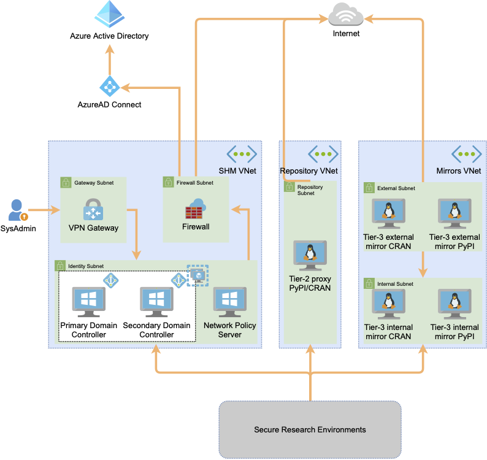
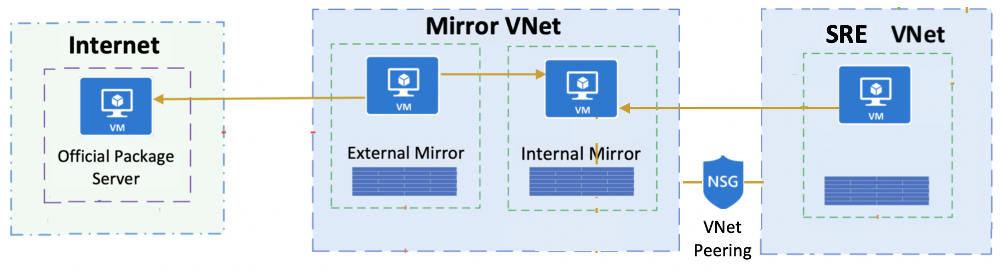

Safe Haven Management design¶
The user and machine management services for the Safe Haven are hosted on a separate subscription to any of the secure project environments. These services include the primary authentication providers, VM images and other services that contribute to the smooth running of the service. This provides a centralised management facility, ensuring consistency across all secure project environemts.
Architecture¶
Within the Management segment all authentication services are contained within a single virtual network (VNet). The Windows Servers are running Active Directory and are acting as Domain Controllers. They are configured within an Azure availability set to ensure maximum up time.
In addition to the Domain Controllers there is a Windows Network Policy server, this server provides Multifactor Authentication services to the Remote Desktop Servers hosted within the SREs.
The NPS server is also running Azure AD Connect to synchronise user IDs to the AzureAD that is associated with the Management subscription. Network security is provided by Azure Network Security Groups that ensure that inbound connections are limited to Active Directory and RADIUS traffic.
For management of the environment there is an Azure point-to-site (P2S) VPN service configured. Access to this is limited to the Data Safe Haven administration team and requires both a client certificate and administrative login credentials.
Package mirrors¶
For Tier 2 and Tier 3 SREs, a selection of Python and R packages can be provided via a set of servers that mirror some or all of the PyPI or CRAN package servers.
Tier 2 environments can access a common set of full mirrors of PyPI and CRAN, while each Tier 3 environment can have its own dedicated set of mirrors, hosting only a subset of PyPI or CRAN packages restricted to a SRE specific allowlist. Connection of SREs to mirror sets is achieved via VNet peering. While Tier 2 SREs are peered to the same mirror VNet, this does not permit communication between SREs.
To minimise the risk of any breaches via the package mirrors, there are two mirror servers for each official package server mirrored.
The “external” mirror is protected by an infrastructure level firewall that does not permit any inbound connections at all (not even from the “internal” mirror). It can call out to the internet to update itself from the official package server and can push updates to the “internal” mirror via rsync.
The “internal” mirror is protected by an infrastructure level firewall that does not permit any outbound connections at all (not even to the “external” mirror). It can receive inbound rsync connections from the “external” mirror to receive package updates and inbound connections from its associated SREs to install packages.
Between them this pair of servers operate as a one-way “airlock” to allow packages to be pulled from the official package server on the internet and made available to Secure Research Desktops (SRDs) in project SREs, while not permitting the mirrors to be used to connect to the internet from a SRE. Even if the “internal” mirror was to be compromised, the infrastructure level firewall restricting outbound connections would prevent access to any other resources within the Safe Haven or outside of it.